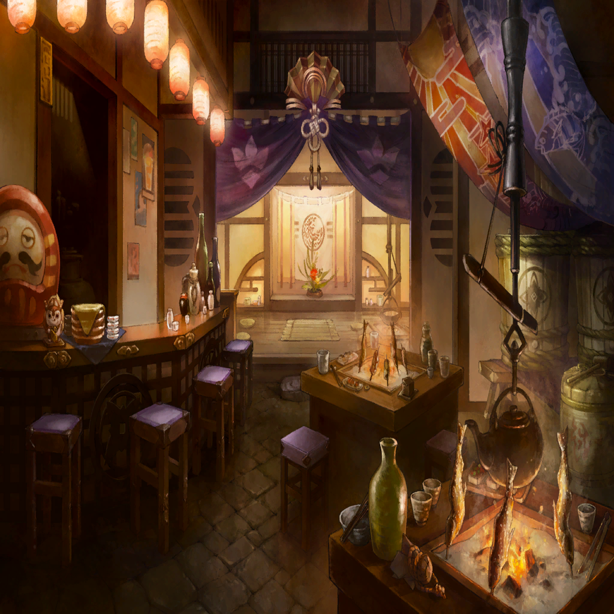
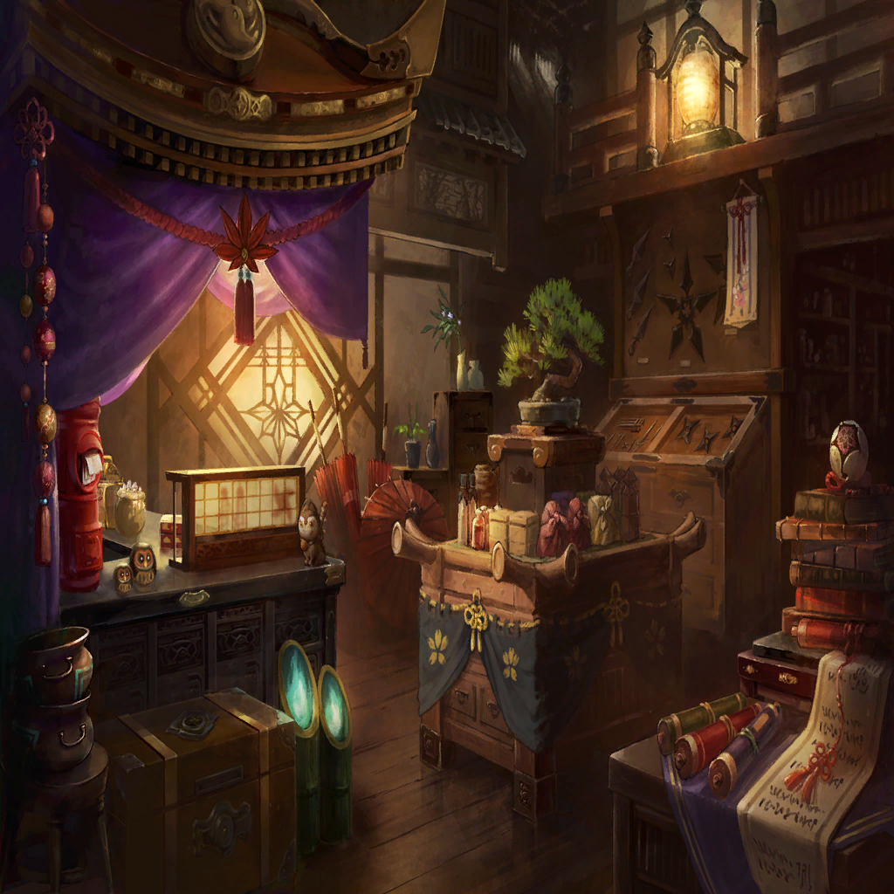

|
 |
| ボタン |
ひとつ、ふたつ、みっつ、よっつ、いつつ |
| ボタン |
“正”しいという五画の文字
線を並び変えれば…ほらっ |
| ボタン |
“平”和です |
| 子供 |
せんせー、じゃあじゃあ
“平”和が
“正”しいってこと～？ |
| ボタン |
そう！
正解ですっ |
| 子供 |
じゃあどうして
王様たちはいっぱい戦ってたの～？ |
| ボタン |
…それは |
| 子供 |
せんせーも戦ってたの？ |
| ボタン |
………… |
 |
| ボタン |
遊学？ |
| ばあや |
ようやくでございますね！
ボタン様！ |
| 父 |
絶え間ないワダツミ内での戦も
一旦は落ち着きを見せた…
ボタン、お前の尽力のおかげだ |
| ボタン |
いえ、私は… |
| 父 |
ワダツミ王家に仕える巫女一族として
見聞を広める必要があろう |
| 母 |
お母さんもボタンくらいの歳には
一人立ちして島を一周したものよ？ |
| ボタン |
お父様、お母様…
そんな、よろしいのでしょうか…？ |
| ばあや |
ボタン様には幼き頃から
外国の物語の読み聞かせを
毎晩ねだられたものです |
| ボタン |
ばあや… |
| 父 |
ボタンが海の向こうへ
想いを馳せていた気持ちは
わかっているつもりだ |
| 父 |
お前が呼び出す“サムライ”が
屈強な異国の騎士であるのも
その憧れからだろう？ |
| ボタン |
は、はい… |
| 母 |
バベル大陸への船は
グリードダイクの交易船のみ
二か月に一本しかないわ |
 |
| |
見上げた空はいつも晴天
星々を見送るのはいつも私 |
| |
その星を追う旅立ちの日は近づいていた |
|  |
| 王家兵士Ａ |
オオ？ 正義の巫女様の登場だ！ |
| ボタン |
ふふっ
お昼から酒盛りですか？ |
| 王家兵士Ｂ |
ありがたいことに
仕事がありませんぜ！ |
| 王家兵士Ｃ |
我々がこうして飲めるのも
平和に導いてくださった
巫女様のおかげでしょう！ |
| 王家兵士Ａ |
聞きましたよボタン様！
やっと島の外に出られるんですって!? |
| 王家兵士Ｂ |
そりゃめでてえや！
平和になったらいつかは、って
言ってましたもんね!! |
| ボタン |
あ、あの、それなんですけど… |
| 王家兵士Ｃ |
帰ってきたら
土産話
聞かせてくださいよ！ |
| ボタン |
あの、実は |
| ボタン |
…………お断わり
してきたんです |
|  |
| ボタン |
ワダツミが好きですから |
| 工芸品店主 |
へえ～ |
| ボタン |
お父様やお母様が言われることも
わかるんですよ？ |
| 工芸品店主 |
理解のある娘だねぇ |
| ボタン |
王家に仕える巫女は
呪術を用いて人々に安寧をもたらすべし…
ワダツミの教えで人々を救うべし… |
| ボタン |
大陸への遊学に行けば
その理想に近づくことができる
ということも… |
| 工芸品店主 |
行けばいいじゃないの |
| ボタン |
かわいい生徒たちがいますし…
お父様もお母様も、ばあやも
私がいなくなったら寂しがります |
| ボタン |
兵士の皆さんも
あんな風に飲んだくれていては
目が離せませんよ |
| ボタン |
それに、おばちゃんのお店が
すごく落ち着くんです
ワダツミの工芸品に囲まれて… |
| 工芸品店主 |
そんなこと言ってるけどねアンタ |
| 工芸品店主 |
今日店に来てからアンタが手に取るモン
ぜ～んぶ、外国のモンじゃないの |
| ボタン |
あ、ううう |
| 工芸品店主 |
海の向こうに行きゃあさ
もっと色んなモンが待ってんだよ？ |
| ボタン |
… |
| 工芸品店主 |
アンタの夢はなんだっけ？ |
| ボタン |
おばちゃぁん、今言わせるんですか…？ |
| 工芸品店主 |
いつも言ってたじゃないか |
| ボタン |
… |
| ボタン |
世界、平和…です |
 |
| ボタン |
（世界が平和でありますように、と） |
| ボタン |
（世界中の皆さんがきっと
平和を祈っている
幸せを願っている…） |
| ボタン |
（そんな人たちと出会って
お話をして、繋がって…
大地を知り、見知らぬ人々を識って…） |
| ボタン |
（皆さんと“家族”のようになれば…
家族との穏やかな生活を過ごせれば…
それだけを祈って…でも…） |
| ボタン |
（見渡す限り
広すぎる水平線の向こうに
かすんで見える広大な大陸） |
| ボタン |
（私の正しさは
本当に正しく認められるのでしょうか…？） |
| ボタン |
（果てのない世界
正解を探して、探して…） |
| ？？？ |
見つけた |
| ボタン |
？ |
| ？？？ |
捜したよ |
| ボタン |
…！
…あなたは |
| ？？？ |
正義の巫女サマの
遊学護衛騎士サマ |
| ボタン |
…………イカサ |

イカサ |
ボタン
キミを迎えに来たんだ |
| ボタン |
迎えに…？ |
イカサ |
ひとつ、見渡す限り水平線
ふたつ、憧れ夢の大陸へ
みっつ、背後に平和な故郷 |
| ボタン |
…!? |
| 子供 |
せんせー！
おべんきょ
がんばってねー！ |
| 王家兵士 |
巫女様！
ワダツミは任せてくださいよ!! |
| 工芸品店主 |
さっさと行っちまいなよっ！
世界を平和にしておいで～！ |
| ボタン |
…みな、さん |
| 母 |
ボタン、体には気をつけるのよ…！ |
| ボタン |
やだ、お母様…泣かないでください
今生の別れでもありませんし… |
| 母 |
そうよね…ええ、そうね |
| ばあや |
ボタン様…
念願を叶えられたこと
自分のことのように嬉しく…ウウッ |
| ボタン |
ばあやまで…
おおげさですよ…っ |
| 父 |
行ってこい、ボタン |
| ボタン |
お父様………… |
イカサ |
よっつ
同じ夢見た騎士がお供で |
イカサ |
いつつ、見上げた今の空は？ |
| ボタン |
いい、天気です…！ |
イカサ |
漫遊道中異常なし |
イカサ |
もう一度言うよボタン
キミを迎えに来たんだ |
イカサ |
────さあ、正解は？ |
| |
見上げた星空のすべてが
降り注いでくるなんて
思いもしなかった |
|
|